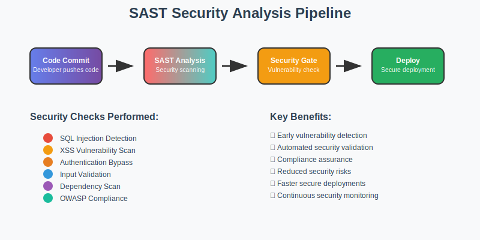

Static Application Security Testing (SAST) is a security testing methodology that analyzes source code, bytecode, or binary code for security vulnerabilities without executing the program. It's like having a security expert review your code 24/7!
Vulnerability Detection
Code Quality
Security Standards
Automated Scanning

🛡️ Why SAST in CI/CD Pipelines?
Integrating SAST into CI/CD pipelines provides continuous security monitoring throughout the development lifecycle. Here's how it works:
🔍 Automated Security Scanning: Every code commit triggers SAST analysis to detect vulnerabilities before they reach production
Code Quality Checks: Identifies security anti-patterns and coding errors
Vulnerability Detection: Finds SQL injection, XSS, and other security flaws
📦 Dependency Check: Install and verify all project dependencies
🧪 Unit Testing: Run automated tests to ensure functionality
🔍 SAST Analysis:Security scanning begins
Scan source code for vulnerabilities
Check for security anti-patterns
Validate against OWASP Top 10
Analyze dependencies for known vulnerabilities
✅ Security Gate: Only proceed if no critical vulnerabilities found
🏗️ Build Process: Compile and bundle the secure code
🚀 Deploy: Deploy to staging, then production environments
🛡️ Security Benefits
This automated workflow ensures that every code change is security-validated before reaching production, significantly reducing security risks and improving overall code quality.
🎯 Benefits of SAST-Enhanced CI/CD Pipelines
Here's why security-focused pipelines are essential for modern development:
🔒 Enhanced Security: Continuous security scanning catches vulnerabilities before they reach production
💰 Cost Reduction: Early vulnerability detection is 100x cheaper than fixing production issues
🛡️ Compliance Assurance: Automated compliance checks ensure regulatory requirements are met
👥 Team Confidence: Developers can code with confidence knowing security is automated
📊 Security Metrics: Continuous visibility into security posture and improvement trends
📈 Real-World Impact
Organizations using SAST in CI/CD pipelines report:
70% reduction in security vulnerabilities
50% faster security issue resolution
90% improvement in compliance scores
🚀 Interactive Demo
This website demonstrates a SAST-enhanced CI/CD pipeline in action. Try the interactive elements below to see how security analysis works:
🔍 Security Analysis Simulator
Click the button below to simulate a SAST security scan:
📊 Scan Results:
🎓 Learning Path: This project teaches you how to integrate security testing into your development workflow, making your applications more secure from day one!
📚 Next Steps
Ready to implement SAST in your own projects? Here's what you can do:
Explore the Pipeline: Check out the bitbucket-pipelines.yml file
Run Tests: Execute npm test to see security tests in action
Build the Project: Run npm run build to see the build process
Study the Code: Examine how security checks are integrated